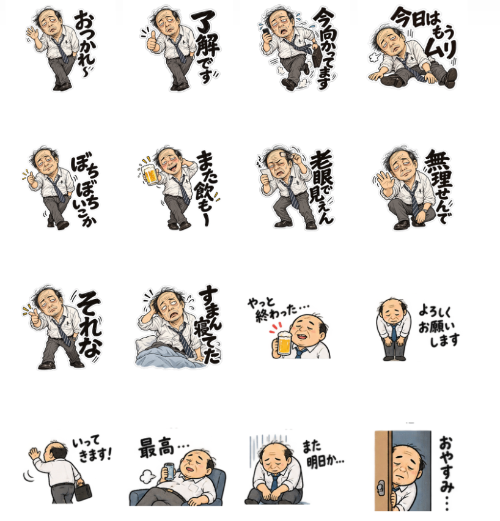
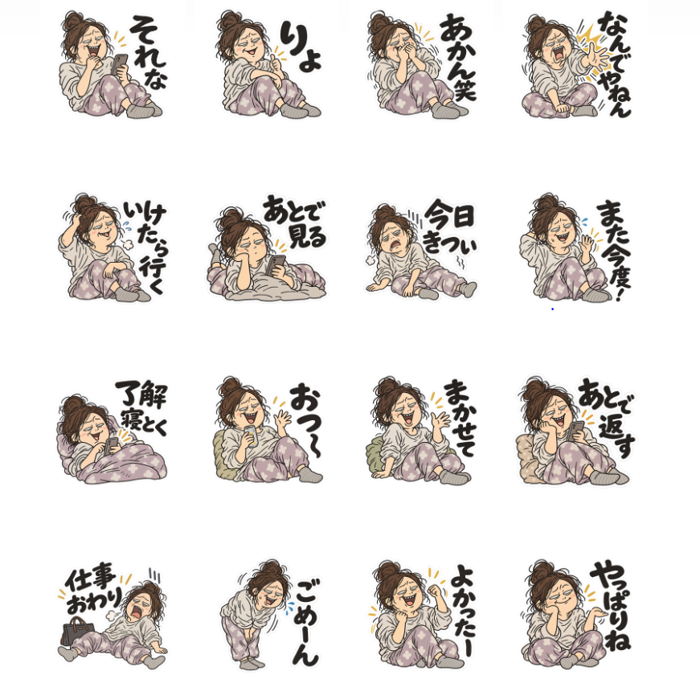
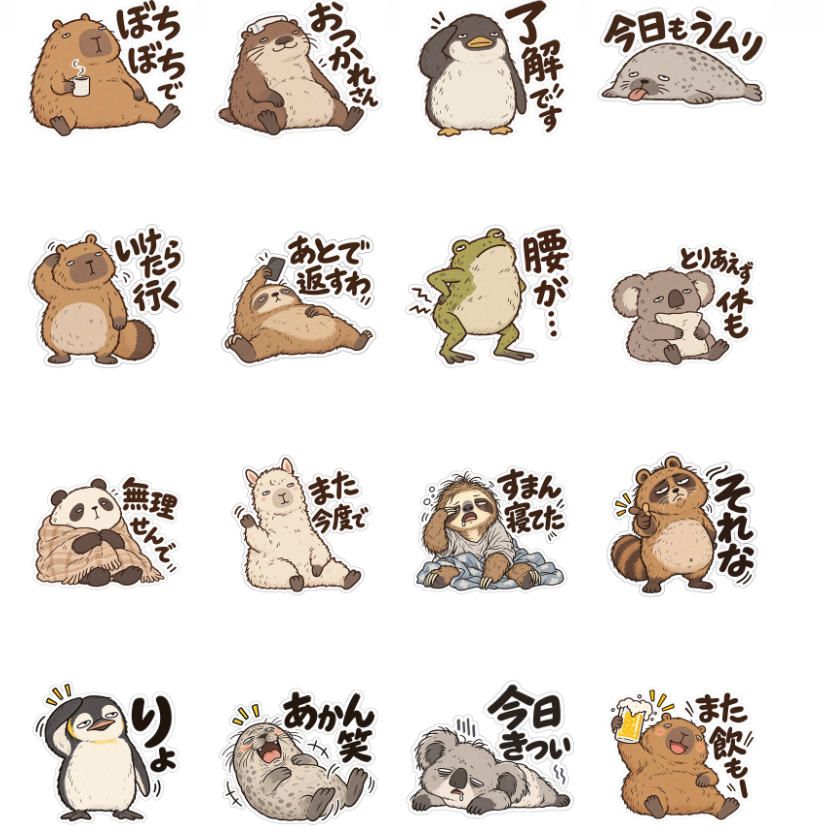

<article id="work-line-stickers" class="work-showcase"><div class="work-intro"><span class="tag">LINEスタンプ</span><h3>AIと作った、ちょっと疲れたスタンプたち</h3><p>くたびれた会社員、家でだらっと過ごす女性、ゆるい動物たち。日常のひと言を、AIと一緒にスタンプにしました。</p><div class="line-sticker-grid"><div><h4>くたびれ会社員おじさん</h4><a href="https://line.me/S/sticker/37135165" target="_blank" rel="noopener noreferrer">LINE STOREで見る</a></div><div><h4>ゆるだら女性スタンプ</h4><a href="https://line.me/S/sticker/37135151" target="_blank" rel="noopener noreferrer">LINE STOREで見る</a></div><div><h4>ゆるい動物スタンプ</h4><a href="https://line.me/S/sticker/37135059" target="_blank" rel="noopener noreferrer">LINE STOREで見る</a></div></div><div class="work-links"><a href="article-line-stickers.html">作ったときの記事を読む</a></div></div></article>
